Grafite + jade
Técnico, discreto e próximo da sua identidade atual.
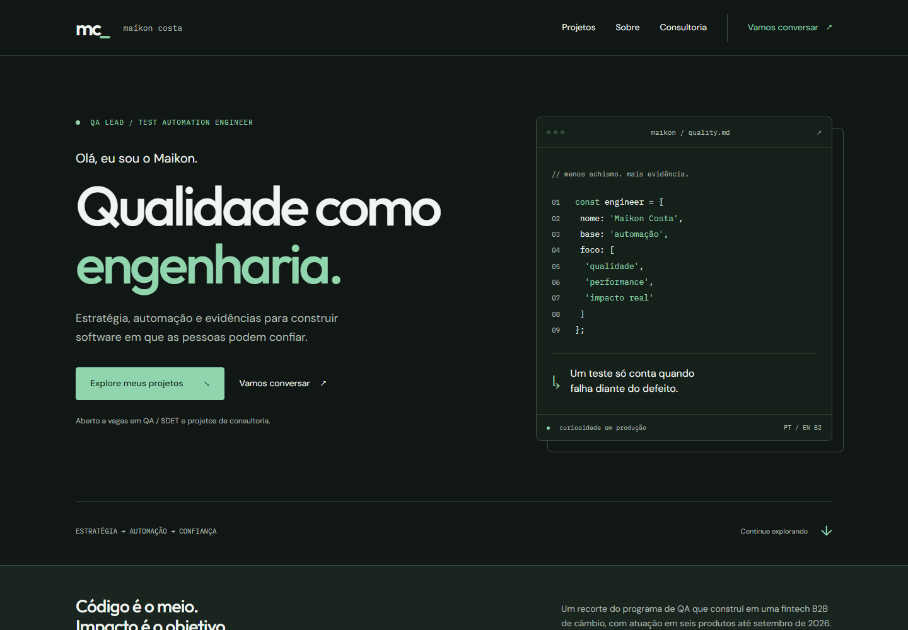
MAIKON COSTA / DIREÇÃO VISUAL
Compare a mesma composição em doze versões. Clique em uma prévia para explorar a página inteira.
Técnico, discreto e próximo da sua identidade atual.

Técnico, discreto e próximo da sua identidade atual.
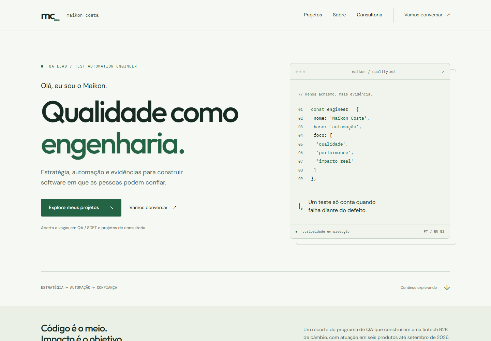
Sóbrio e preciso, com uma presença mais corporativa.
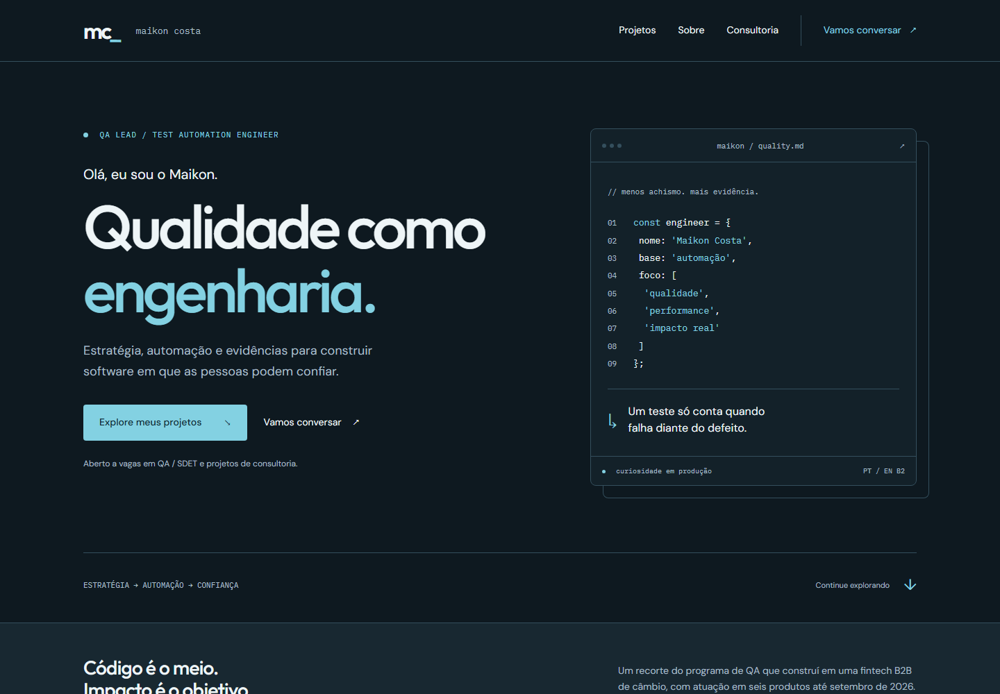
Sóbrio e preciso, com uma presença mais corporativa.
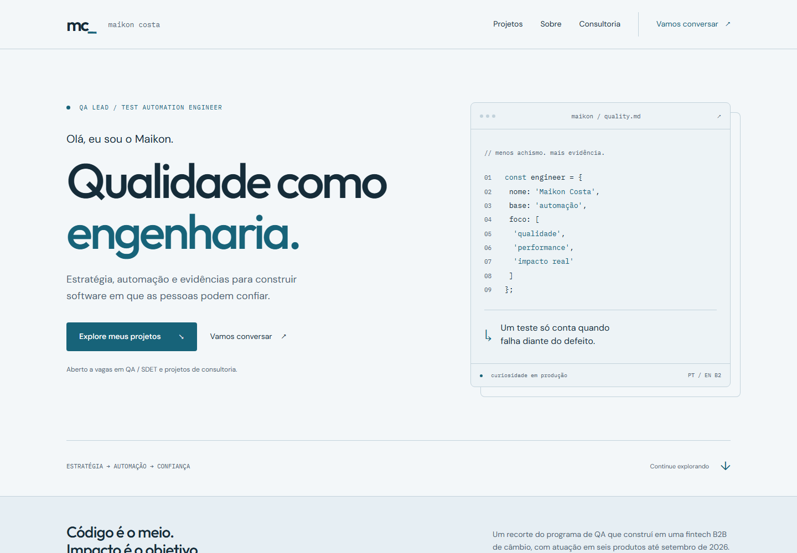
Autoral e acolhedor, com um toque de terminal vintage.
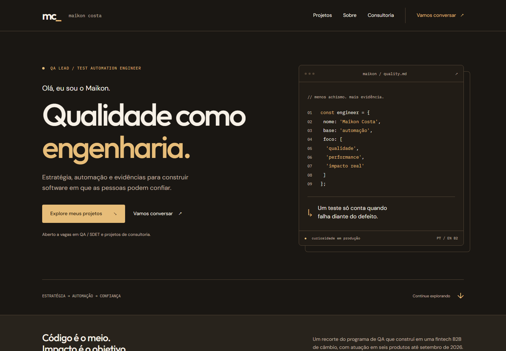
Autoral e acolhedor, com um toque de terminal vintage.
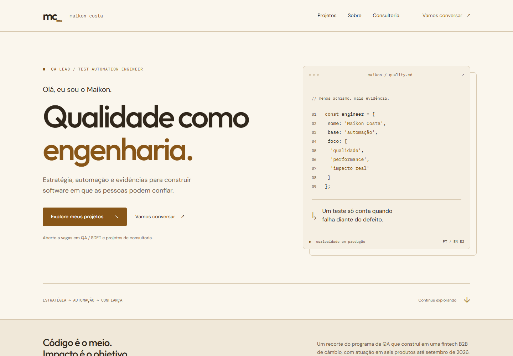
Criativo e tecnológico, com lavanda discreta e fundos neutros.
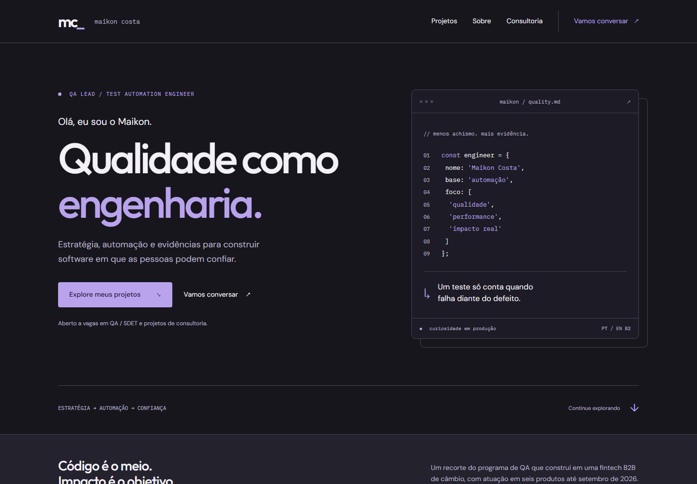
Criativo e tecnológico, com lavanda discreta e fundos neutros.
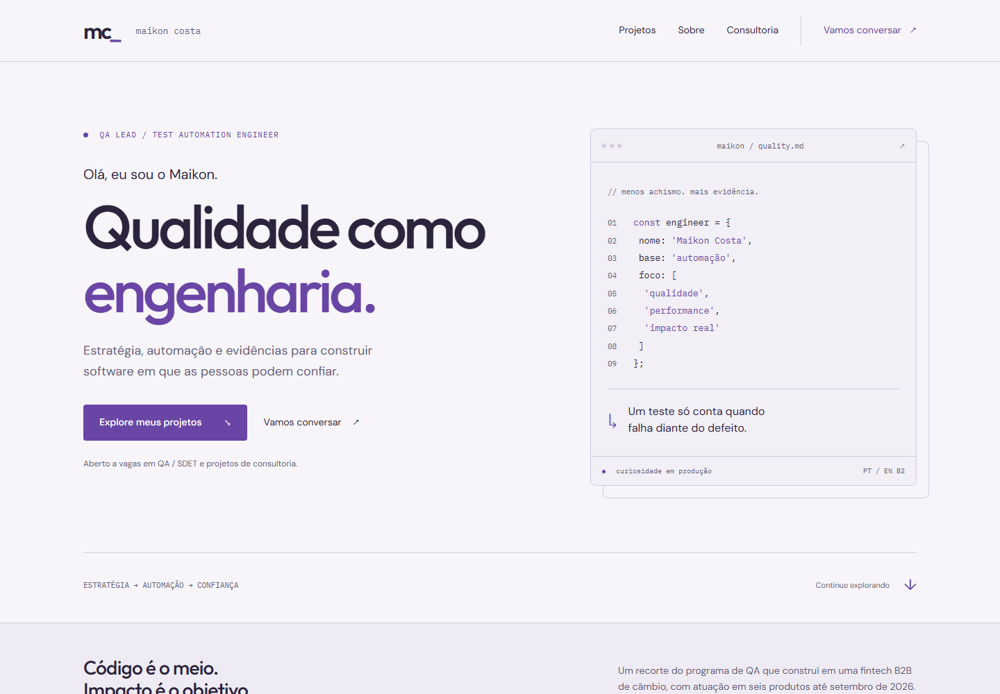
Expressivo e humano, com coral suave no escuro e terracota no claro.
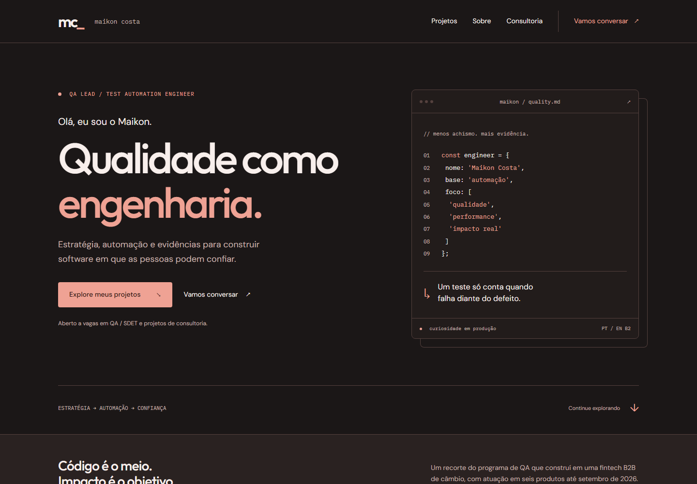
Expressivo e humano, com coral suave no escuro e terracota no claro.
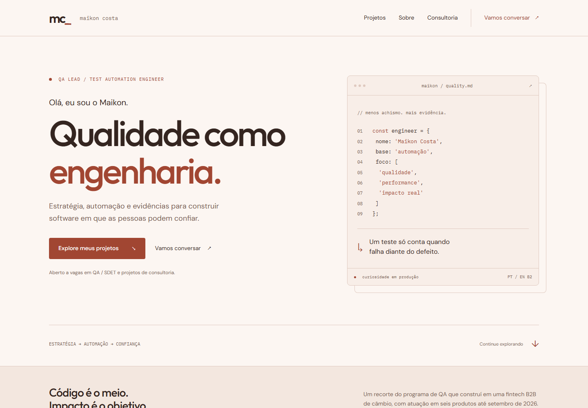
Limpo e contemporâneo, com azul marcante e superfícies neutras.
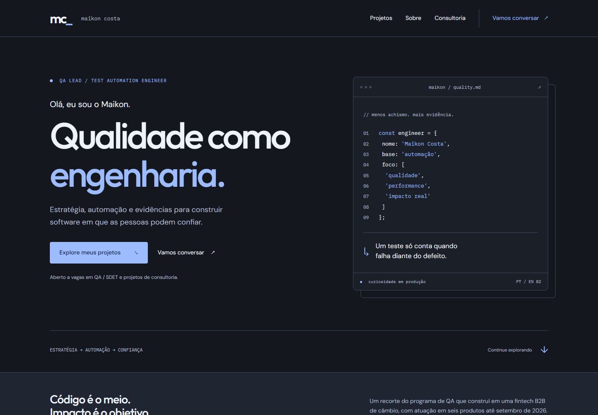
Limpo e contemporâneo, com azul marcante e superfícies neutras.
Estudos de paleta: o idioma e os controles de tema serão implementados após a escolha visual.
Abrir portfólio atual ↗